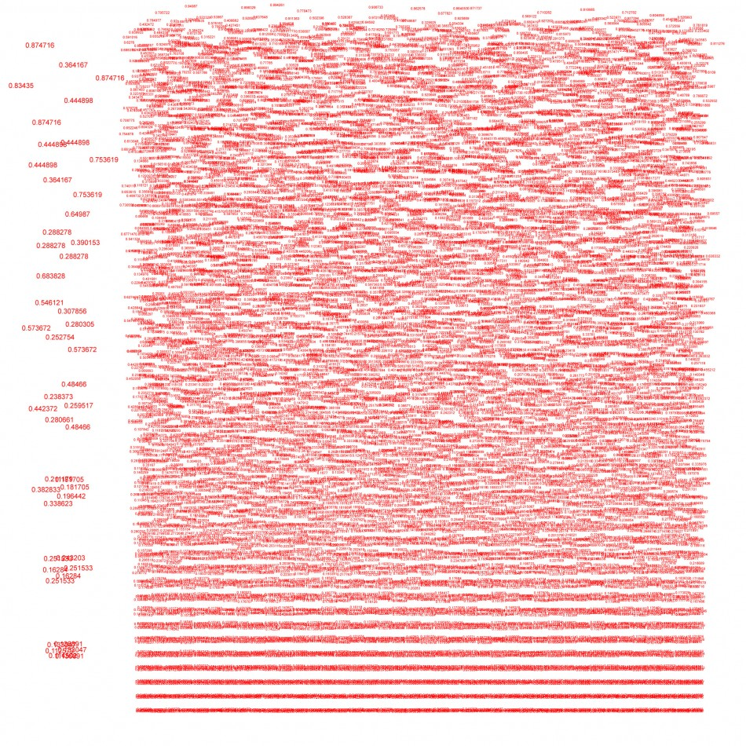
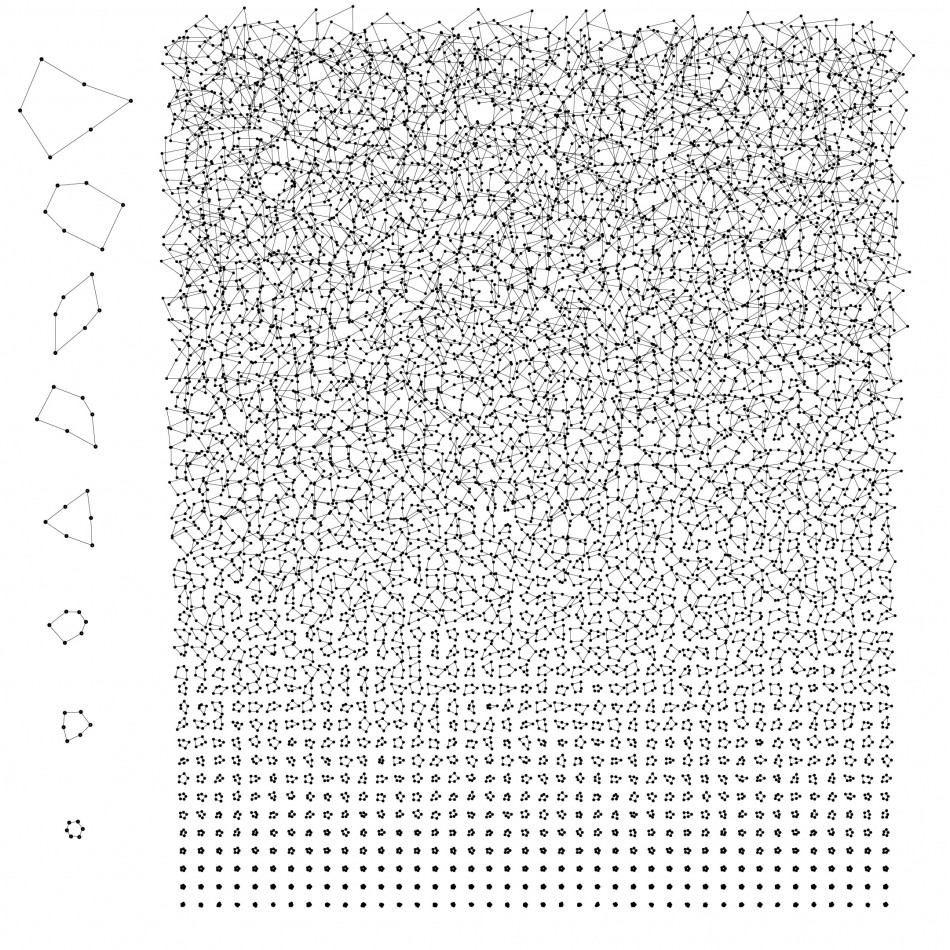
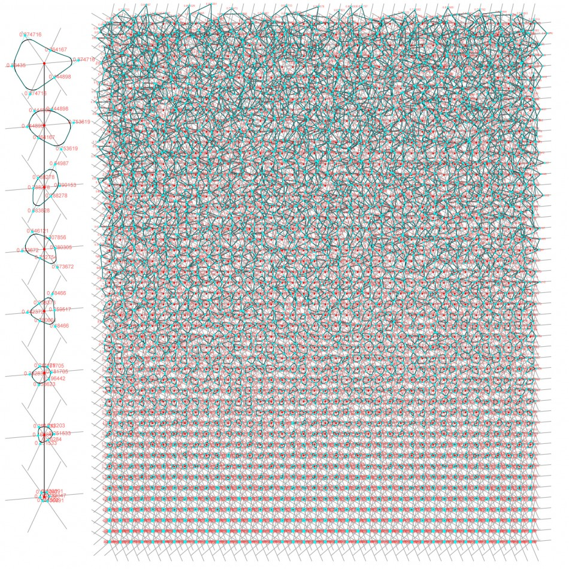
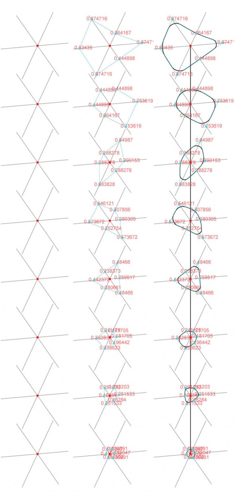

The process of fritting infuses the exterior glazing of a building with a series of ceramic dots deployed in a pattern that varies in density along the facade in order to reduce interior heat gain while optimizing the ratio of natural to artificial lighting based on shifting internal program. Below is one of a series of computational patterns I created for the fritted-glass facade of a large-scale hospital design. The goal was to create a process in which patterns could be quickly tested and analyzed both aesthetically and numerically in terms of energy calculations based on the changing parameters of internal function, geometry, and desired coverage that occur during the design process. This specific pattern is derived by layering a series of rules over a star-shaped grid-like framework organized in rows. Each star segment acts like a track where a parameter allows for a vertex to run from top to bottom. The vertices within each star are connected to create a continuous poly-line. By generating a unique multi-dimensional array constrained within a specific domain for each star, the 8 vertices move along the track with an increasing range as they progress from bottom to top. The expanding progression of vertices causes a series of overlaps which create the desired overlapping and seemingly organic pattern.
   